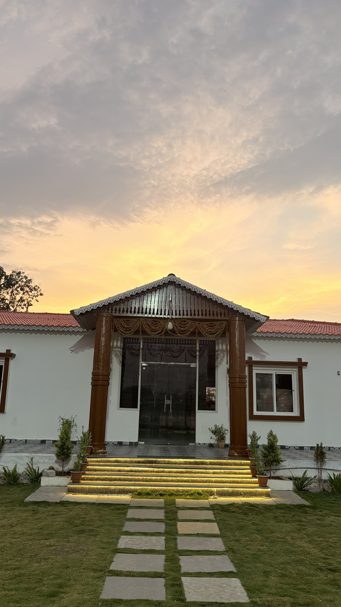

Kerala-Style Farm Stay
Enjoy a peaceful private farmhouse with white walls, timber details, red-tile rooflines, and a resort-like arrival.
Kerala-Style Farm Stay & Event Venue in Nizamabad
A private Kerala-inspired farmhouse with sloping red-tile roofs, carved wood details, warm evening lights, open lawns, and a peaceful north Telangana countryside atmosphere.
Enjoy a peaceful private farmhouse with white walls, timber details, red-tile rooflines, and a resort-like arrival.
A stone walkway, fresh lawn, planted edges, and warm step lighting create a beautiful first impression.
Flexible indoor and outdoor spaces for birthdays, haldi, mehendi, engagements, and private events.
Convenient for guests from Nizamabad city, Armoor, Bodhan, Kamareddy, and Hyderabad road travelers.
Welcome to JK Farms
JK Farms is a premium private farmhouse and event venue in the Nizamabad region, designed around a Kerala-style facade, carved timber accents, a red-tile roof, landscaped lawn, and warm evening lighting.
With an AC farmhouse, banquet space, open lawn, and beautiful outdoor areas, JK Farms is ideal for birthdays, family gatherings, private celebrations, pre-wedding events, haldi, mehendi, engagements, and weekend stays.
Whether you are planning a simple family get-together or a special celebration, JK Farms gives you the comfort, privacy, and atmosphere needed to create memorable moments.

Facilities
Everything you need for a comfortable stay, beautiful celebration, and memorable event experience.
Comfortable indoor stay space for families and groups.
Sloped red-tile roofing, white walls, timber columns, and ornamental roof trim.
Indoor venue space for private functions and special moments.
Green outdoor setting for haldi, mehendi, birthdays, and photos.
Relaxing sit-out areas for guests to enjoy the farmhouse mood.
Guest-friendly parking support for events and farm stays.
Beautiful corners for memories, portraits, and pre-wedding shoots.
Warm, private atmosphere for safe family gatherings.
Nizamabad Travel Context
Nizamabad is known for its Indur heritage, agricultural identity, temples, reservoirs, and green picnic spots, giving JK Farms a stronger local story than a generic party venue.
Eco-tourism, treks, viewpoint tower, Mallaram Cheruvu, and the famous mushroom-shaped rock near Nizamabad town.
A scenic reservoir garden with deer park, trekking, and water-sport attractions promoted by Telangana Tourism.
Nizamabad Fort, Raghunatha Temple, and Dichpally Ramalayam add heritage value for guests extending their trip.
District data highlights strong horticulture output, especially spices and vegetables, supporting an authentic farm-region positioning.
Events
From intimate family gatherings to beautiful pre-wedding celebrations, JK Farms is designed for flexible private events.
Gallery
A glimpse of the spaces, views, and celebration moments at JK Farms.
Packages
Flexible options for day outings, private events, and overnight stays.
Best for: Families, friends, garden time, and short getaways.
Best for: Birthdays, haldi, mehendi, engagements, and private celebrations.
Best for: Weekend stays, family gatherings, and private farmhouse experience.
Location
JK Farms is located in the Nizamabad region of Telangana, making it convenient for guests from Nizamabad city, Armoor, Bodhan, Kamareddy, Medak, and Hyderabad.
Use the directions button for a quick Google Maps search, then replace it with the official JK Farms pin once available.
FAQ
Yes. JK Farms is designed for private family gatherings, weekend stays, birthdays, and small to medium celebrations.
Pool access depends on the selected package. Please contact the JK Farms team to confirm package details and availability.
Yes. JK Farms is suitable for birthday parties, family events, pool parties, and private celebrations.
Yes. The lawn, banquet space, and outdoor areas can be used for haldi, mehendi, pre-wedding shoots, and engagement-style events.
Food rules may depend on the package and event type. Please confirm directly while booking.
You can call or message JK Farms on WhatsApp with your event date, guest count, event type, and preferred package.
Booking
Share your event date, guest count, and event type. Our team will help you choose the best package.